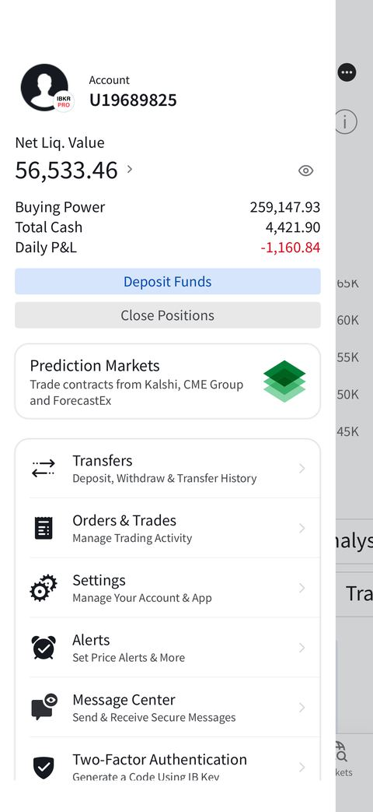
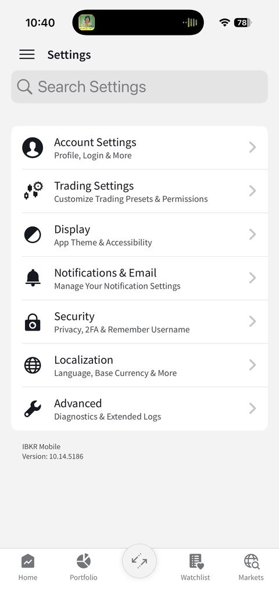
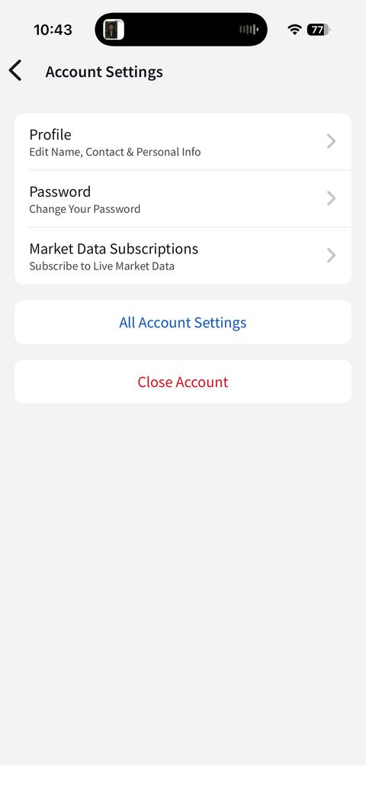
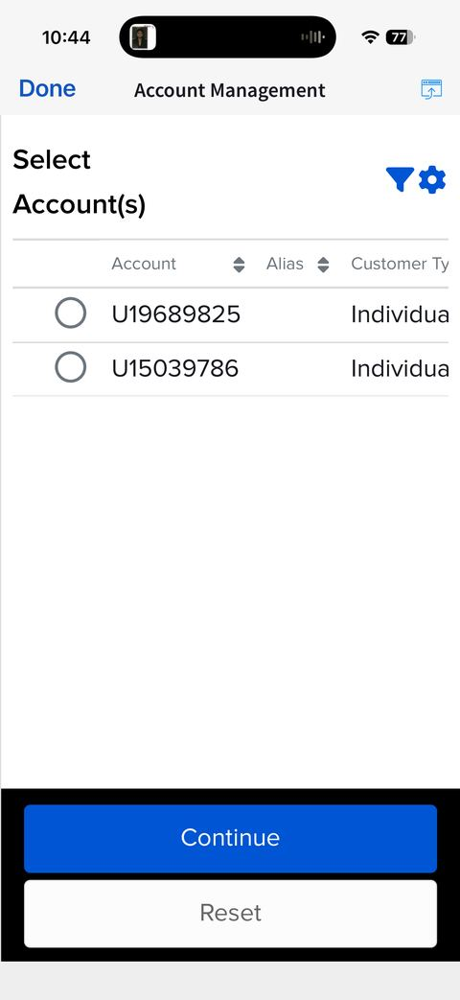
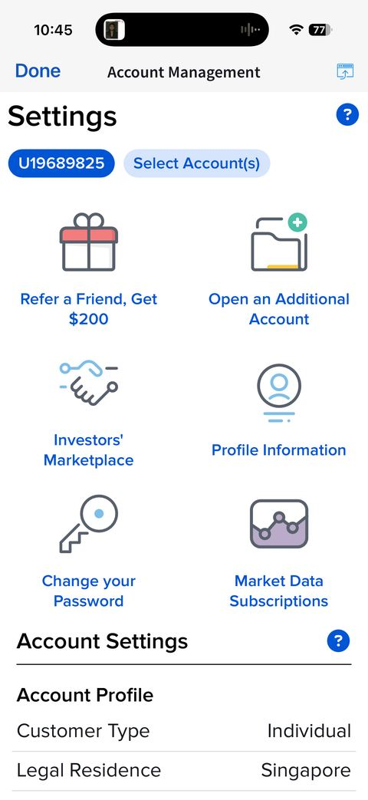
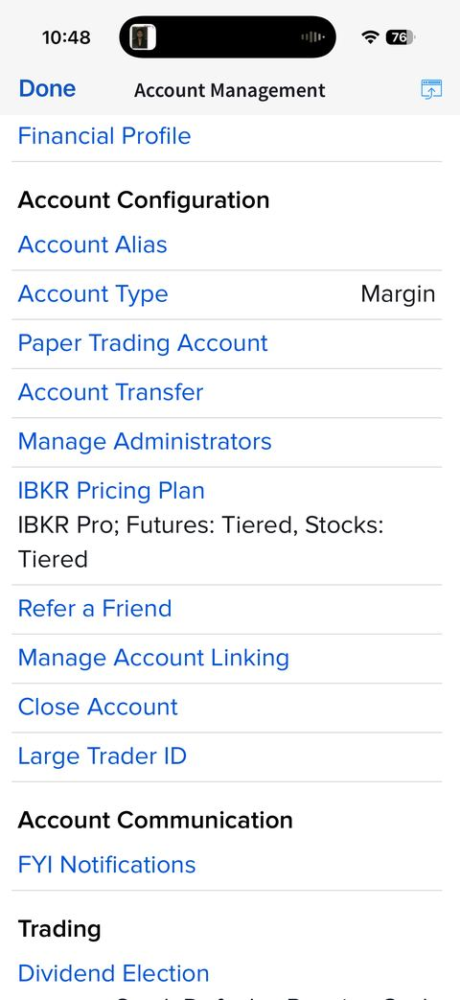

Step-by-step walkthrough of switching an IBKR account to the Tiered pricing plan — the lower-fee option for 4-leg Iron Condor (IG) orders.逐步教学：如何将IBKR账户切换为分级式（Tiered）收费方案——这是4腿铁鹰（IG）订单的较低费率选项。
IBKR Pro accounts can choose between two commission plans. An Iron Condor (IG) is a 4-leg order, so the per-contract rate gets charged 4× on entry and 4× on exit — small differences in the plan add up fast.IBKR Pro账户可在两种佣金方案中选择。铁鹰（IG）是4腿订单，因此每张合约的费率在开仓与平仓时都要乘以4次——方案之间的微小差异会迅速累积。
| Plan方案 | How it works运作方式 |
|---|---|
| Tiered分级式 | Per-contract rate drops as monthly volume rises; exchange & regulatory fees passed through at cost (no markup) — usually cheaper for active multi-leg traders每张合约费率随月交易量增加而降低；交易所及监管费按实际成本转嫁（不加价）——对活跃的多腿交易者通常更划算 |
| Fixed固定式 | One flat all-in rate per contract regardless of volume — simpler, but no volume discount无论交易量多少，每张合约收取统一的全包费率——较简单，但没有交易量折扣 |
See the fee breakdown in T23: 4-Leg Iron Condor Guide for what a round-trip actually costs.实际来回一趟的费用明细请见 T23：四腿铁鹰交易指南。





